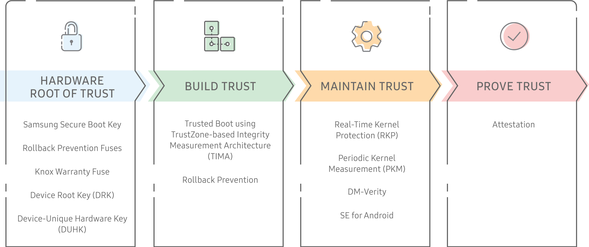

Root of Trust
Last updated February 20th, 2024
Imagine every device on your network simultaneously infected with malware and combing through your confidential data. Attacks and exploits continue to mature in sophistication in an attempt to stay ahead of advancing mobile device safeguards. So what’s the single solution that works on all devices at the same time? Building a robust Root of Trust stack that minimizes exposure, detects intrusions, and locks down sensitive information.
A Root of Trust is the cornerstone of any modern security protocol. It is a series of stringent checks and balances, beginning at the hardware level rather than the software level. This feature adds a level of security to devices, making them difficult to attack since hardware is less mutable than software.
A Root of Trust answers many complicated security questions, such as:
- How do you know if a compromised OS was booted at runtime?
- Can you trust that your certificates are stored securely?
- Has an exploit modified the kernel or other system software?
Samsung’s approach to addressing this issue is to bottleneck all security-critical functionality through trustworthy components. These trustworthy components are thoroughly designed, reviewed, and maintained with the following considerations:
- What are the assurances required? High-security enterprise partners require near-total ability to control and audit the software interfacing with their systems. Device users must have the authority to deny permission to use their device features and data. Each user, partner, and integrated system has its own requirements, many of which are assured in large part through the Roots of Trust.
- How can components contribute to more complex assurances? A Trusted Boot process enables the trustworthy transfer of control from the bootloader to the Android framework. This trustworthy transfer of control plays a key role in the IT admin’s ability to audit apps running on the device. Secure boot is a complex process built on top of many smaller components that validate software, configuration files, deployment processes, and update processes. Each of these smaller components contributes to the secure boot process, and a secure boot process itself contributes to the security of other processes.
- How can we make these components, their assurances, and their usage more robust? Each Trusted Application on a Samsung Knox device ultimately represents each Root of Trust. These Trusted Applications encompass functionality such as device identity, key management, and remote attestation of device health. Samsung Knox uses these same Trusted Applications to provide its own assurances.
Knox Platform trusted environment
The Knox Platform builds a unique, industry-leading trusted environment in four ways:
- Establishes a hardware-backed Root of Trust, on which other components rely.
- Builds trust during boot, through features like Trusted Boot.
- Maintains trust while the device is in use, through features like Real-Time Kernel Protection.
- Proves its trustworthiness on demand, through Device Health Attestation.
This process and its components are as follows:

How the Root of Trust works
- Knox Platform security starts in the factory — before users even power on their device — when a Device-Unique Hardware Key (DUHK) is generated on the device using its hardware random number generator.
- Next, the DUHK generates and encrypts the Device Root Key (DRK) and Samsung Attestation Key (SAK).
- Upon device start up, Samsung uses the Samsung Secure Boot Key (SSBK) to check all software components. One of the components is the TrustZone Secure world, a chip partition reserved for secure code and data. Only specially privileged software modules running within the TrustZone Secure world can access these keys.
- The software performs a check on each Knox Platform feature before allowing it to run. Since this chain of security checks begins with the very first hardware check, each feature is protected by hardware Root of Trust. No matter which link in the chain an attacker targets, one of the security checks detects it.
Secure hardware
The Knox Platform trusted environment leverages the following hardware components.
- Bootloader ROM — The Primary Bootloader (PBL) is the first piece of code to run during the boot process. The PBL is trusted to measure and verify the boot chain. To prevent tampering, the PBL is kept in the ROM of the secure hardware. The device hardware loads and runs the PBL from ROM at boot, and the PBL starts the Secure and Trusted Boot processes.
- ARM TrustZone Secure world — The Secure world is the environment in which highly sensitive software runs. The ARM TrustZone hardware ensures memory and components marked secure (for example, a fingerprint reader) can only be accessed in the Secure World. Most of the system, including the kernel, middleware, and apps, run in the Normal World. The Secure world software, on the other hand, is more privileged, and can access both Secure and Normal world resources.
- Knox Vault — The Knox Vault is an independent, tamper-proof, secure subsystem with its own processor, memory, and an interface to dedicated non-volatile storage. The Knox Vault stores sensitive data such as cryptographic keys and authentication data. Even if the main application processor that runs Android is compromised, the Knox Vault protects secrets and guards against hardware attacks such as probing and fault injection.
Hardware keys
- Device-Unique Hardware Key (DUHK) — Samsung incorporates the DUHK, a device-unique symmetric key, in the device hardware during the initial manufacturing of the device. The DUHK binds data — for example, device health attestation data — to a particular device and is accessible only by a hardware cryptography module and not directly exposed to any device software. However, software can request that the DUHK encrypt and decrypt data. This DUHK encrypted data is bound to the device, and thus can’t be decrypted on any other device.
- Device Root Key (DRK) — The DRK is a device-unique, asymmetric RSA key pair that is signed by Samsung’s root key through an X.509 certificate. This certificate proves that Samsung produced the DRK. The DRK is generated at manufacture in the Samsung factory and is stored on the device encrypted by the DUHK, thus binding it to the device. The DRK is only accessible from within the TrustZone Secure world and is protected by the DUHK. The DRK is an important part of the Root of Trust, as it derives other signing keys. Because the DRK is device-unique, it can tie data to a device through cryptographic signatures. Signing keys are derived from the DRK and used to sign data.
- Samsung Secure Boot Key (SSBK) — The SSBK is an asymmetric key pair used to sign Samsung-approved boot executables.
- The private part of the SSBK is used by Samsung to sign secondary and app bootloaders.
- The public part of the SSBK is stored in the hardware’s one-time programmable fuses at manufacture in the Samsung factory. The Secure Boot process uses this public key to verify whether each boot component it loads is approved.
- Samsung Attestation Key (SAK) — The SAK is also a device-unique, asymmetric key pair that is signed by Samsung’s root key. This signed key pair proves that the SAK was produced by Samsung. The SAK is used to sign the Attestation blob that indicates if the device is in a trusted state. The signature proves that Attestation data originated from the TrustZone Secure world on a Samsung device. Unlike the DRK, the SAK is a set of ECDSA keys. ECDSA is a newer asymmetric algorithm, similar to RSA but smaller and faster for the same strength.
Hardware fuses
Samsung Knox security is built in layers, from low-level capabilities in the hardware to Android itself. One of the important low-level features are the hardware fuses, which provide a Root of Trust based in hardware. Samsung Root of Trust components are designed as one-time fuses, making a permanent record of data such as encryption keys, Rollback Prevention, and the Knox Warranty.
Rollback Prevention (RP) Fuses
These fuses encode the minimum acceptable version of Samsung-approved bootloaders. Old software may contain known vulnerabilities that may be exploited. Rollback prevention excludes approved, but out-of-date bootloaders from being loaded.
The RP fuse version number is set when system software is initially installed and when specific updates occur. Once the RP fuse version number is set, it is impossible to revert back to legacy software versions.
Knox Warranty Fuse
The purpose of the Knox Warranty Fuse is to provide a record of the integrity of the device. Samsung monitors the integrity of several different components, detecting if any particular component is in a non-approved configuration. For example, the Trusted Boot process sets the fuse when it detects the following:
- an unsigned kernel is loaded
- a critical security feature like SELinux is disabled
These types of checks are critical as non-approved components could lead to vulnerabilities such as privilege escalation or access to normally protected peripherals. Such non-approved components can even lead to vulnerabilities being persistent over reboots or even future updates, for example, returning to an approved component.
The Knox Warranty Fuse is designed to provide a tamper-resistant, persistent record of running in a non-approved state. Since the fuse can only be set one time, once it has been set to mark a non-approved configuration, the device is permanently marked as having had a non-approved configuration, regardless of any future actions. For the enterprise, this ensures that a previously compromised device cannot be brought back into a seemingly compliant state and used normally.
To use the Knox Warranty Fuse, Samsung has integrated the measurement into several checks on the device, both during boot and after, allowing processes such as the following to see the status of the device:
- Access to the core encryption keys of TrustZone. The Knox Warranty Fuse value is used in the decryption of the Device-Unique Hardware Key and all data protected by this key. This blocks access to any keys stored in TrustZone, such as keys stored by enterprise apps. This means any data stored on the device becomes inaccessible after the Knox Warranty Fuse has been set. This includes data encrypted by DualDAR Encryption and Sensitive Data Protection.
- Device is factory reset after the Knox Warranty bit has been set. In this case, a user may be able to use the device, but Knox functions such as creating a work profile are blocked. Similarly, functions that rely on Knox security, such as Samsung Pay, are also blocked. The Device Health Attestation reports that the device has been compromised at some point, and reports this status to requesting services such as an Attestation Key.
As a persistent record of the state of the device, the Knox Warranty Fuse is able to provide a unique capability to ensure that a Samsung device is trustworthy and has been maintained in a trustworthy state during its lifecycle.
On this page
Is this page helpful?